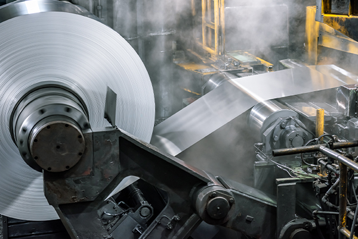
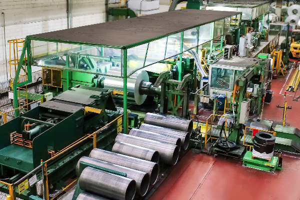
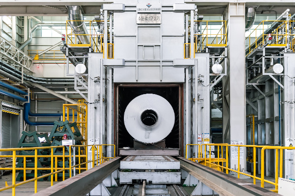

@@include('./include/header.html')
생산공정
MANUFACTURING PROCESS
냉연 Cold Mill
- 냉간압연Cold Rolling
- Coil Degreasing Line
- 소둔Annealing

- 냉간압연기 Cold Rolling
- 냉각된 coil에 대해 재결정 온도이하에서 스트립의 두께를 더욱 줄이기
위해 사용한다.
- 냉연 압연의 목적
- 가공경화에 의한 강도 및 경도 증가
- 결정립 미세화
- 판 두께 정밀도 향상
- 평탄도
- 코일 표면 품질 향상

- Coil Degreasing Line
- 냉간 압연된 코일 표면의 압연유를 제거하여 오일과 관련한 결함을
방지하기 위한 공정이다.

- 소둔 Annealing
- 냉간 압연을 행하면 알루미늄 재료는 점점 더 경화되어 압연하기 어렵
게 된다. 이렇게 가공경화된 재료는 가공 변형을 제거하여 가공하기
쉬운 상태로 되돌릴 필요가 있고 그렇게 하기 위해 적당한 온도로
가열한다. 이것을 소둔처리라고 한다.
전신재 비열처리 합금에서의 소둔은 최종제품의 강도 조절을 위하여
냉간압연 도중에 열처리를 하는 중간 소둔, 냉간 압연 후 O재 및 H2X
재를 만들기 위한 최종 소둔과 H3X재를 만들기 위한 안정화 처리 소둔
으로 나눌 수 있다.
@@include('./include/footer.html')